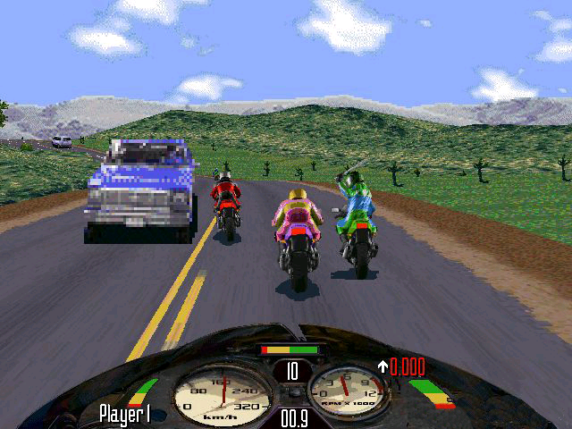
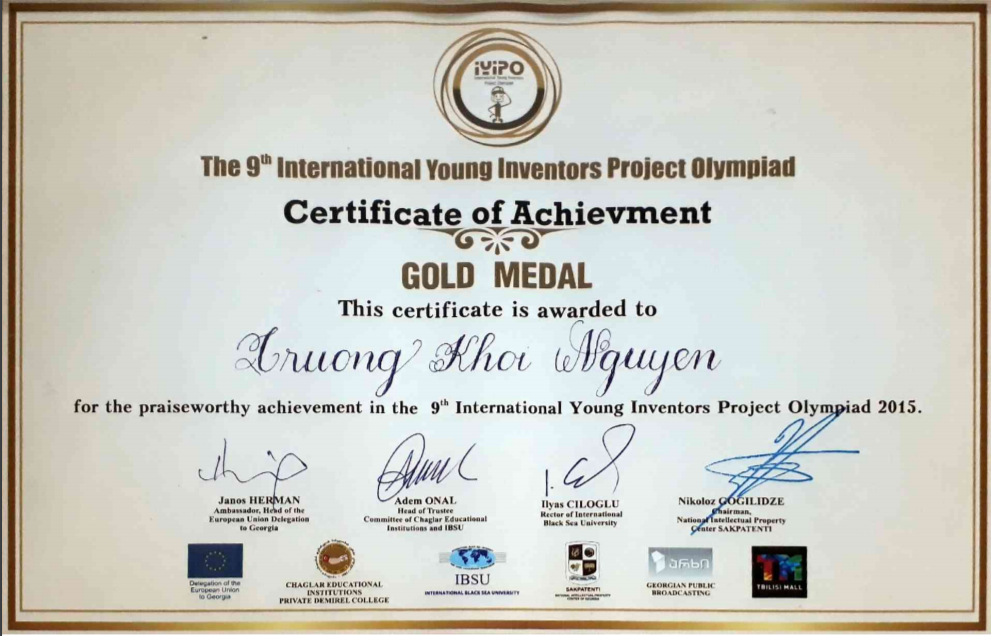

Interest in IT
What is your interest in IT? When did your interest in IT start? Was there a particular event or person that sparked
your interest? Outline your IT experience
I’m just in pure love with the science of how computer systems work, how they have been developed through time and how life can get much easier and more interesting with technologies. My father first showed me how to get access to our home personal computer when I was 5 years old, where I had my very first Road Rash game. That moment opened up a whole new world of technology for me, and I have always been eager to plunge myself into discovering more since. Having joined every IT class at school and spent a lot of time researching about PCs nowadays, I now can operate with C++, simple Python, and know the basic principles of PCs’ hardware. In 2015 I participated in the 9th International Young Inventors Project Olympiad and won a gold medal by designing a simple mobile app for smart houses. And that is just the beginning of a long journey ahead waiting for me.
 Why did you choose to come to RMIT?
I was admitted by Beloit College, DePauw University, Earlham College, Miami University and University of Denver, all located in USA. Still, I chose RMIT to be my next destination. The reason is very simple and realistic: already having a high reputation and a program accredited by highly reputable organizations, RMIT Vietnam can also offer an international environment with professional studying and working experience, let me be exposed to the latest facilities and infrastructures regarding information technology, while maintaining a much more affordable tuition plan and creating a reasonable, time-saving pathway for my future based on the three-year university system.
What do you expect to learn during your studies?
This may sound a bit too ambitious, but I hope to get my hand onto every aspect of information technology when studying at RMIT. Even though I only mentioned coding, computer systems and the applicability of technology as my favorite subjects, being able to cover most of the things would be extremely useful and make me more adaptive. It definitely demands me to go through the enormous amount of information, but I think I do have what it takes to do this wish. Doing this would enable me to view the bigger picture of IT and help me to decide my future career. Furthermore, I also want to delve into AI, machine learning, and deep learning as they hold the key to a new era of technology. At the moment I would love to finish the course and get a job related to this field, and possibly study for higher degrees.